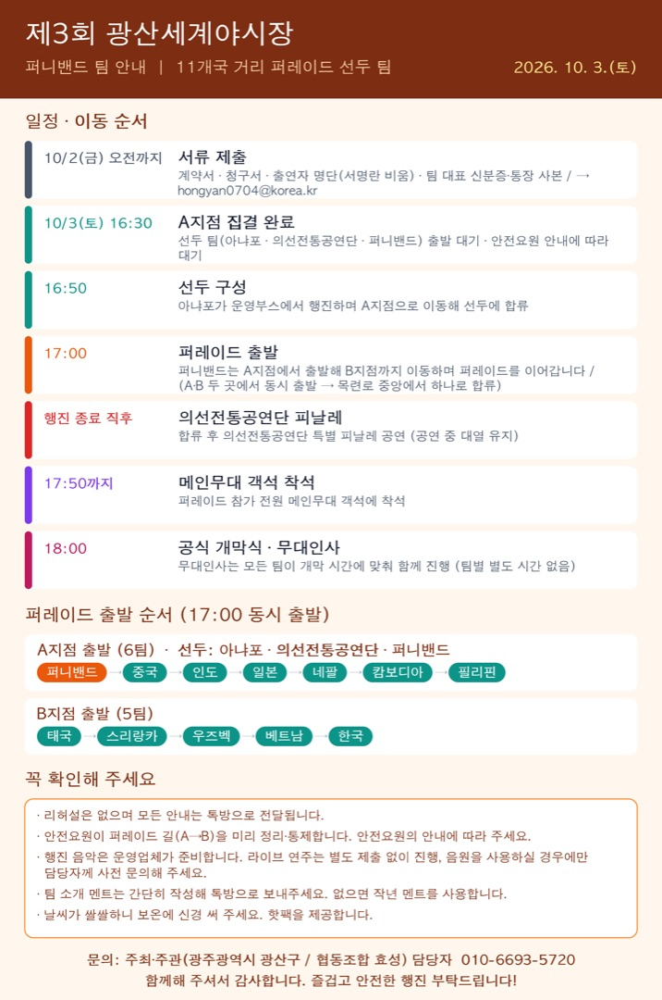

이미지를 누르면 크게 볼 수 있고, 길게 눌러 저장할 수 있습니다.
퍼니밴드 팀께서는 올해 11개국 거리 퍼레이드의 선두 팀으로 함께해 주십니다.
10월 3일(토) 퍼레이드 일정과 준비 사항을 안내드립니다. (첨부 이미지 참고)
행사 일정
- 일시: 2026. 10. 3.(토) 전체 행사 14:00 ~ 22:00
- 장소: 광산구 월곡동 목련로 400m 차 없는 거리
- 16:30 출발지점(A지점) 집결 완료
- 17:00 퍼레이드 출발
- 18:00 공식 개막식
퍼니밴드 진행 순서
- 1. 16:30까지 A지점에 집결해 주세요. (선두 팀: 아냐포 · 의선전통공연단 · 퍼니밴드)
- 2. 16:50 아냐포가 운영부스에서 행진하며 A지점으로 이동해 선두에 합류합니다.
- 3. 17:00 퍼니밴드는 A지점에서 출발해 B지점까지 이동하며 퍼레이드를 이어갑니다.
- A지점(6팀): 중국 → 인도 → 일본 → 네팔 → 캄보디아 → 필리핀
- B지점(5팀): 태국 → 스리랑카 → 우즈베키스탄 → 베트남 → 한국
- 두 곳에서 출발해 목련로 중앙에서 하나로 합류합니다.
- 4. 행진이 끝나면 의선전통공연단의 특별 피날레 공연이 진행됩니다.
- 5. 17:50까지 퍼레이드 참가 전원이 메인무대 객석에 착석해 주세요.
- 6. 18:00 공식 개막식 무대인사는 모든 팀이 개막 시간에 맞춰 함께 진행하며, 팀별로 별도의 시간은 없습니다.
안내 및 요청 사항
- 리허설은 없으며, 모든 안내는 퍼레이드 단체 톡방으로 전달됩니다.
- 안전요원이 퍼레이드 길(A→B)을 미리 정리·통제합니다. 안전요원의 안내에 따라 주세요.
- 행진 음악은 운영업체가 준비합니다. 라이브 연주는 별도 제출 없이 진행하며, 음원을 사용하실 경우에만 담당자께 사전 문의해 주세요.
- 팀 소개 멘트는 간단히 작성해 톡방으로 보내주세요. (없으면 작년 멘트를 사용합니다.)
- 날씨가 쌀쌀하니 보온에 신경 써 주세요. 핫팩을 제공합니다.